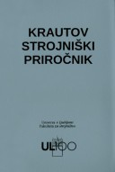

|  |
|
|
||||||||
|---|---|---|---|---|---|---|---|---|---|---|
| ZALOŽNIK O KNJIGI:
Krautov strojniški priročnik je izvirna slovenska strokovna knjiga z najdaljšo tradicijo oz. kontinuiteto ponatisov ter novih, razširjenih in izboljšanih izdaj. Tudi če tehniške stroke in njihove priročnike primerjamo v merilu celotne nekdanje Jugoslavije, je po njegovi zaslugi na prvem mestu slovensko strojništvo. |
||||||||||